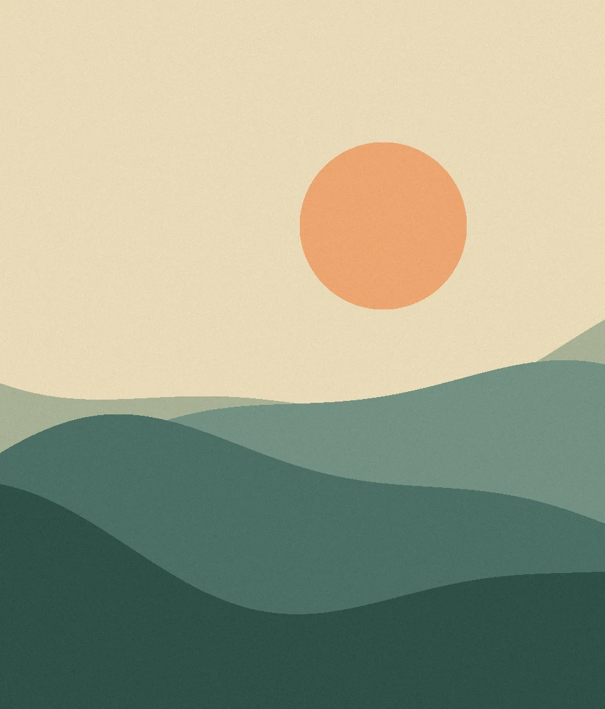
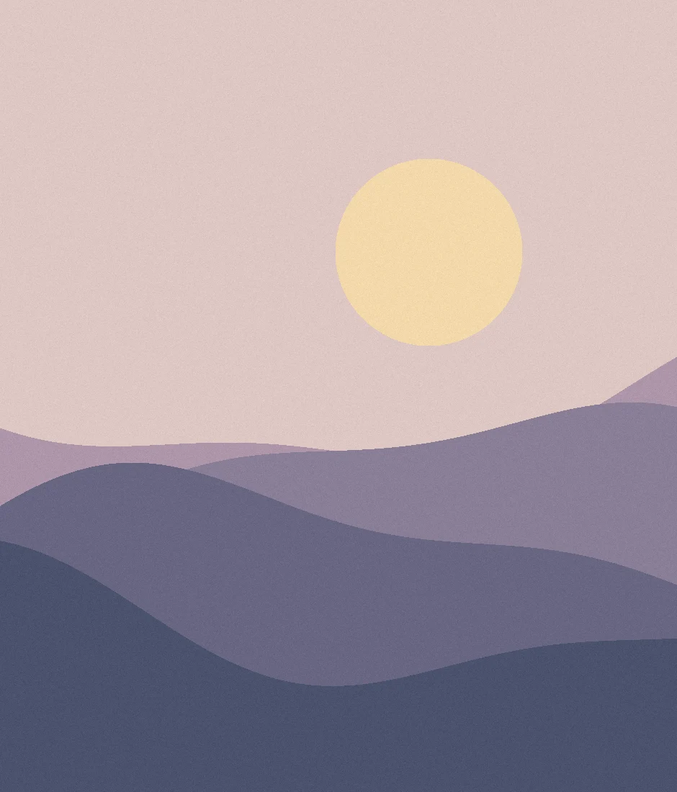

NAGI NO MA / YOGA & SOUND
ひと息つける、
わたしの時間。
朝は、のびやかに身体を動かす庭のヨガ。
夕方は、音の余韻を聴きながら横になるひととき。

Morning lightat the studio.
庭のヨガ ／ 音と休息のヨガ
PICK UP CLASSES
今月のおすすめ
CLASS CALENDAR
レッスンカレンダー
色のついた日を選ぶと、クラスの詳細をご覧いただけます。

OUR STUDIO
凪の間について
小さな庭と、音がゆっくり響く部屋。凪の間は、ふたつの空間で季節のヨガを楽しむ架空の教室です。
クラスのはじめに、その日の過ごし方を一緒に選びます。椅子に座って参加することもできます。